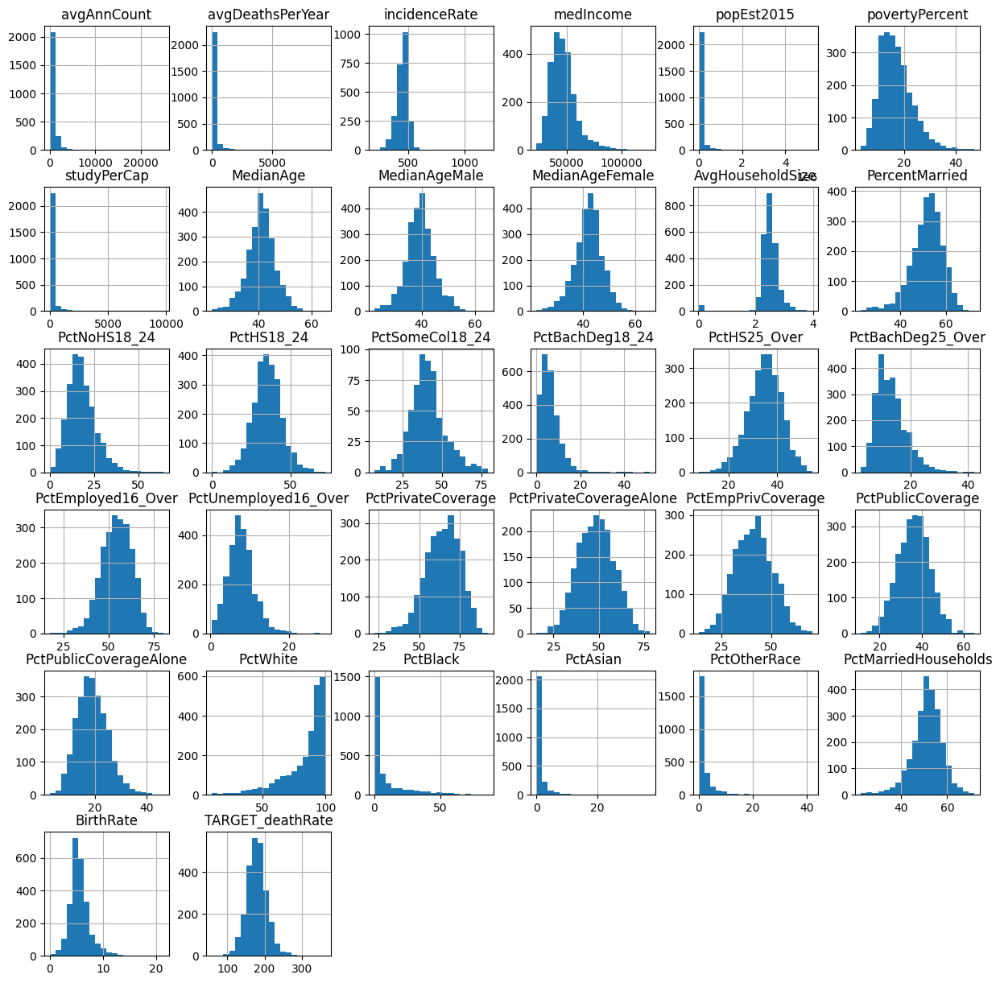

Predicting Cancer Mortality Rates in US Counties
Machine Learning project using Pandas, Matplotlib, Seaborn and Scikit-learn
Project Details / Background
This project involves developing a regression model to predict cancer mortality rates in
various US counties using a dataset of socio-economic characteristics and other relevant information from
multiple counties. The objective was to apply this model to predict rates
for 'unseen' counties, utilizing Jupyter notebooks to guide the analysis and
document the methodology and findings.
Datasets and setup:
The provided dataset comprises data collected from multiple counties in the US. The regression task for this assessment is to predict cancer mortality rates in "unseen" US counties, given some training data.
The training data ('Training_data.csv') comprises various features/predictors related to socio-economic characteristics, amongst other types of information for specific counties in the country. The corresponding target variables for the training set are provided in a separate CSV file ('Training_data_targets.csv').
The provided dataset comprises data collected from multiple counties in the US. The regression task for this assessment is to predict cancer mortality rates in "unseen" US counties, given some training data.
The training data ('Training_data.csv') comprises various features/predictors related to socio-economic characteristics, amongst other types of information for specific counties in the country. The corresponding target variables for the training set are provided in a separate CSV file ('Training_data_targets.csv').
avgAnnCount: Mean number of reported cases of cancer diagnosed annually
avgDeathsPerYear: Mean number of reported mortalities due to cancer
incidenceRate: Mean per capita (100,000) cancer diagnoses
medianIncome: Median income per county
popEst2015: Population of county
povertyPercent: Percent of populace in poverty
MedianAge: Median age of county residents
MedianAgeMale: Median age of male county residents
MedianAgeFemale: Median age of female county residents
AvgHouseholdSize: Mean household size of county
PercentMarried: Percent of county residents who are married
PctNoHS18_24: Percent of county residents ages 18-24 highest education attained: less than high school
PctHS18_24: Percent of county residents ages 18-24 highest education attained: high school diploma
PctSomeCol18_24: Percent of county residents ages 18-24 highest education attained: some college
PctBachDeg18_24: Percent of county residents ages 18-24 highest education attained: bachelor's degree
PctHS25_Over: Percent of county residents ages 25 and over highest education attained: high school diploma
PctBachDeg25_Over: Percent of county residents ages 25 and over highest education attained: bachelor's degree
PctEmployed16_Over: Percent of county residents ages 16 and over employed
PctUnemployed16_Over: Percent of county residents ages 16 and over unemployed
PctPrivateCoverage: Percent of county residents with private health coverage
PctPrivateCoverageAlone: Percent of county residents with private health coverage alone (no public assistance)
PctEmpPrivCoverage: Percent of county residents with employee-provided private health coverage
PctPublicCoverage: Percent of county residents with government-provided health coverage
PctPublicCoverageAlone: Percent of county residents with government-provided health coverage alone
PctWhite: Percent of county residents who identify as White
PctBlack: Percent of county residents who identify as Black
PctAsian: Percent of county residents who identify as Asian
PctOtherRace: Percent of county residents who identify in a category which is not White, Black, or Asian
PctMarriedHouseholds: Percent of married households
BirthRate: Number of live births relative to number of women in county
First, reading in the training data and targets files. The training data comprises of features/predictors while the targets file comprises the targets (i.e. cancer mortality rates in US counties) to train models to predict.
import os
import pandas as pd
## Define paths to the training data and targets files
training_data_path = 'Training_data.csv'
training_targets_path = 'Training_data_targets.csv'
Starting by importing essential visualization libraries, `matplotlib.pyplot` and `seaborn`. With these tools, I can load my training data and target variables from CSV files. This forms the basis of the dataset.
Once I have my data ready, I combine the features and targets into a single DataFrame. Handling data in this integrated manner is particularly useful for correlational analysis and visualization tasks.
Next, I focus on cleaning the data, particularly looking at the `MedianAge` feature. I identify and correct any outliers—values above 100 in this case—by replacing them with the mean age of the dataset. This normalization helps in mitigating any skew that these outliers might introduce into the predictive models. For a thorough exploratory analysis, histograms are plotted for each feature in the dataset. These histograms help visualize the distribution of data points, detect any skewness, and identify further outliers.
Then I examine the correlations between the features and the target variable, `TARGET_deathRate`. By sorting these correlations, I identify the top five features that have the strongest relationship with the target. This step ishelps informs me about the features that are most likely to influence the predictions in my model.
To visualise further, I plot a scatter matrix for the top five correlated features using Seaborn's `pairplot`. This matrix is particularly helpful for spotting trends, patterns, and potential interactions between features.
Once I have my data ready, I combine the features and targets into a single DataFrame. Handling data in this integrated manner is particularly useful for correlational analysis and visualization tasks.
Next, I focus on cleaning the data, particularly looking at the `MedianAge` feature. I identify and correct any outliers—values above 100 in this case—by replacing them with the mean age of the dataset. This normalization helps in mitigating any skew that these outliers might introduce into the predictive models. For a thorough exploratory analysis, histograms are plotted for each feature in the dataset. These histograms help visualize the distribution of data points, detect any skewness, and identify further outliers.
Then I examine the correlations between the features and the target variable, `TARGET_deathRate`. By sorting these correlations, I identify the top five features that have the strongest relationship with the target. This step ishelps informs me about the features that are most likely to influence the predictions in my model.
To visualise further, I plot a scatter matrix for the top five correlated features using Seaborn's `pairplot`. This matrix is particularly helpful for spotting trends, patterns, and potential interactions between features.
Top five features with strongest correlations to the target:
incidenceRate 0.443983
PctPublicCoverageAlone 0.439734
povertyPercent 0.413260
PctHS25_Over 0.409915
PctPublicCoverage 0.391899
Name: TARGET_deathRate, dtype: float64

feature histograms
feature scatter plots
Regarding any unsual values, we can look for plots that deviate from normal distribution. There does not seem to be any oulier data other than the median age features.
Based on the scatter matrix plots:
We can see positive correlation between PctPrivateCoverage and PctPrivateCoverageAlone. This makes sense as individuals with private health coverage alone contribute to the overall percentage of individuals with private health coverage. The positive correlation indicates that as one of these percentages increases, the other increases as well.
Negative Correlation can be seen in povertyPercent vs. medianIncome. This negative correlation is also expected as higher poverty percentages are associated with lower median incomes. Counties with higher poverty percentages will tend to have lower median incomes, and vice versa.
Based on the scatter matrix plots:
We can see positive correlation between PctPrivateCoverage and PctPrivateCoverageAlone. This makes sense as individuals with private health coverage alone contribute to the overall percentage of individuals with private health coverage. The positive correlation indicates that as one of these percentages increases, the other increases as well.
Negative Correlation can be seen in povertyPercent vs. medianIncome. This negative correlation is also expected as higher poverty percentages are associated with lower median incomes. Counties with higher poverty percentages will tend to have lower median incomes, and vice versa.
Next steps:
Create an ML pipeline using scikit-learn to pre-process the training data.
To prepare the data for modeling, I use the `sklearn` library, specifically components like `SimpleImputer`, `StandardScaler`, `OneHotEncoder`, and `Pipeline`, along with a custom `DataFrameSelector`.
This setup allows for efficient preprocessing of both numerical and categorical data. The `DataFrameSelector` is also useful, as it enables the creation of two parallel pipelines—one for numerical and another for categorical features—streamlining the process.
- Numerical data is handled through a pipeline that includes median imputation and standard scaling to normalize the data, ensuring that our model isn't biased by the scale of the measurements.
- Categorical data, on the other hand, is processed through a pipeline that applies one-hot encoding, which converts categorical variable values into a form that could be provided to ML algorithms to do a better job in prediction.
By combining these pipelines using a `ColumnTransformer`, I can ensure that each feature is appropriately preprocessed before being used in any model training. This comprehensive preparation culminates in applying the full pipeline to both the training and testing datasets, transforming them into forms suitable for machine learning tasks. Lastly, I display the original and transformed data, illustrating the transformation of the dataset for modeling.
Create an ML pipeline using scikit-learn to pre-process the training data.
To prepare the data for modeling, I use the `sklearn` library, specifically components like `SimpleImputer`, `StandardScaler`, `OneHotEncoder`, and `Pipeline`, along with a custom `DataFrameSelector`.
This setup allows for efficient preprocessing of both numerical and categorical data. The `DataFrameSelector` is also useful, as it enables the creation of two parallel pipelines—one for numerical and another for categorical features—streamlining the process.
- Numerical data is handled through a pipeline that includes median imputation and standard scaling to normalize the data, ensuring that our model isn't biased by the scale of the measurements.
- Categorical data, on the other hand, is processed through a pipeline that applies one-hot encoding, which converts categorical variable values into a form that could be provided to ML algorithms to do a better job in prediction.
By combining these pipelines using a `ColumnTransformer`, I can ensure that each feature is appropriately preprocessed before being used in any model training. This comprehensive preparation culminates in applying the full pipeline to both the training and testing datasets, transforming them into forms suitable for machine learning tasks. Lastly, I display the original and transformed data, illustrating the transformation of the dataset for modeling.
Original Data:
avgAnnCount avgDeathsPerYear incidenceRate medIncome popEst2015 \
0 59.0 30 404.3 33975 8251
1 114.0 41 403.8 47363 22702
2 33.0 11 352.0 77222 9899
3 254.0 100 429.6 80650 48904
4 75.0 32 407.5 42839 22255
povertyPercent studyPerCap MedianAge MedianAgeMale MedianAgeFemale \
0 20.5 0.0 51.3 50.8 51.9
1 13.8 0.0 40.8 39.8 42.7
2 6.8 0.0 38.1 36.9 39.8
3 7.5 0.0 43.5 42.7 44.1
4 14.6 0.0 31.1 30.2 31.6
... PctPrivateCoverageAlone PctEmpPrivCoverage PctPublicCoverage \
0 ... NaN 26.0 49.7
1 ... 56.5 46.8 31.6
2 ... 65.4 54.3 18.2
3 ... 64.2 55.6 28.8
4 ... 50.7 46.5 26.8
PctPublicCoverageAlone PctWhite PctBlack PctAsian PctOtherRace \
0 20.6 96.684036 0.438181 0.082899 0.272383
1 13.0 92.295459 2.102845 0.609648 0.879131
...
3 0.672040 -0.537742 -0.473139 0.327809 0.636916 5.825411
4 0.824078 -0.521763 -0.459222 -0.539978 -0.160197 0.806795
[5 rows x 31 columns]
Output is truncated. View as a scrollable element or open in a text editor. Adjust cell output settings...
Regression
Using `LinearRegression`, `Lasso`, and `Ridge`, I can address the dataset that we've already preprocessed.
Beginning with Ordinary Least Squares (OLS) regression, employing `LinearRegression`. By calculating the Mean Squared Error (MSE) through cross-validation, we can get a robust estimate of the model's performance. This step is crucial as it gives us a baseline to compare other models.
Next, we focus on Lasso Regression, known for its ability to perform variable selection and regularization to enhance the prediction accuracy. We use `GridSearchCV` to find the optimal regularization strength, referred to as alpha. This process ensures that we are using the best parameter, enhancing Lasso's ability to identify the most relevant features and potentially improving model accuracy.
After determining the best alpha, we fit a new Lasso model using this value and make predictions on our test set. The resulting MSE from these predictions provides a quantitative measure of Lasso's performance, giving further insight into how well it generalizes to new data.
Then applying a similar approach with Ridge Regression, another method that uses regularization to reduce model complexity and prevent overfitting. Again, `GridSearchCV` helps find the optimal alpha value. By fitting the Ridge model with this alpha and making predictions, we calculate the MSE, allowing us to assess and compare its performance directly against the OLS and Lasso models.
Finally, compiling the results from all three models—OLS, Lasso, and Ridge—and to determine which model performs best based on the lowest MSE. This comparative analysis is most informative as to which regression technique is most effective for the dataset.
Using `LinearRegression`, `Lasso`, and `Ridge`, I can address the dataset that we've already preprocessed.
Beginning with Ordinary Least Squares (OLS) regression, employing `LinearRegression`. By calculating the Mean Squared Error (MSE) through cross-validation, we can get a robust estimate of the model's performance. This step is crucial as it gives us a baseline to compare other models.
Next, we focus on Lasso Regression, known for its ability to perform variable selection and regularization to enhance the prediction accuracy. We use `GridSearchCV` to find the optimal regularization strength, referred to as alpha. This process ensures that we are using the best parameter, enhancing Lasso's ability to identify the most relevant features and potentially improving model accuracy.
After determining the best alpha, we fit a new Lasso model using this value and make predictions on our test set. The resulting MSE from these predictions provides a quantitative measure of Lasso's performance, giving further insight into how well it generalizes to new data.
Then applying a similar approach with Ridge Regression, another method that uses regularization to reduce model complexity and prevent overfitting. Again, `GridSearchCV` helps find the optimal alpha value. By fitting the Ridge model with this alpha and making predictions, we calculate the MSE, allowing us to assess and compare its performance directly against the OLS and Lasso models.
Finally, compiling the results from all three models—OLS, Lasso, and Ridge—and to determine which model performs best based on the lowest MSE. This comparative analysis is most informative as to which regression technique is most effective for the dataset.
Cross-Validated Mean Squared Error (MSE) for OLS: 386.8304
Cross-Validated Mean Squared Error (MSE) for Lasso: 352.6522 (Best alpha: 0.1)
Cross-Validated Mean Squared Error (MSE) for Ridge: 349.9903 (Best alpha: 10)
Best Performing Model: Ridge
Cross-Validated MSE of the Best Performing Model: 349.9903
Analysis
In this analysis, the three linear regression models: Ordinary Least Squares (OLS), Lasso, and Ridge—were fitted to thr already pre processed data. The regularization weights for Lasso and Ridge were determined through hyperparameter tuning with GridSearchCV. For Lasso and Ridge models, a range of alpha values (0.01, 0.1, 1, 10, 100) was used to identify the most ideal value based on a cross-validated mean squared error. The identified optimal alpha values were then utilized to create new Lasso and Ridge models. Cross-validation using the negative mean squared error as the scoring metric was used to quantitatively compare the performance of theses models.
The best-performing model was determined by the lowest Cross-Validated MSE and was Ridge regression. Specifically, the Ridge model with an alpha value of 10 showed the most favorable performance and achieved a Cross-Validated MSE of 349.9903. This outcome highlights the effectiveness of the Ridge model in predictive accuracy. The provided code outlines with comments the entire process, from model fitting and hyperparameter tuning to the quantitative comparison of results.
In this analysis, the three linear regression models: Ordinary Least Squares (OLS), Lasso, and Ridge—were fitted to thr already pre processed data. The regularization weights for Lasso and Ridge were determined through hyperparameter tuning with GridSearchCV. For Lasso and Ridge models, a range of alpha values (0.01, 0.1, 1, 10, 100) was used to identify the most ideal value based on a cross-validated mean squared error. The identified optimal alpha values were then utilized to create new Lasso and Ridge models. Cross-validation using the negative mean squared error as the scoring metric was used to quantitatively compare the performance of theses models.
The best-performing model was determined by the lowest Cross-Validated MSE and was Ridge regression. Specifically, the Ridge model with an alpha value of 10 showed the most favorable performance and achieved a Cross-Validated MSE of 349.9903. This outcome highlights the effectiveness of the Ridge model in predictive accuracy. The provided code outlines with comments the entire process, from model fitting and hyperparameter tuning to the quantitative comparison of results.